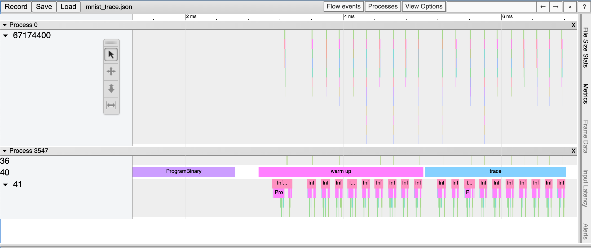

Performance profiling¶
Low latency and high throughput performance are critical factors in many DNN applications. For performance optimization, model developers and ML engineers must understand the model performance and be able to analyze bottlenecks. To assist developers with this process, Furiosa SDK provides a profiling tool.
Trace Analysis¶
Trace analysis provides structured data on execution time by step, by actually executing model inference task. You can also visualize the data using the Trace Event Profiling Tool function of the Chrome web browser.
Though small, trace generation generates temporal overheads as it measures time for each step and writes the results to a file. It is thus not enabled by default. You can create trace by using one of the following methods.
Enabling trace generation through environment variables¶
You can enable trace generation by setting the path of the file to which the trace result will be written in FURIOSA_PROFILER_OUTPUT_PATH. The advantage of this method is that the code remains unchanged. The downside is that you cannot set a specific section or category for measurement.
cd furiosa-sdk/examples/inferences
export FURIOSA_PROFILER_OUTPUT_PATH=`pwd`/tracing.json
./image_classification.sh ../assets/images/car.jpeg
ls -l ./tracing.json
-rw-r--r--@ 1 furiosa furiosa 605054 Jun 15 02:02 tracing.json
If you enable trace generation through environment variables as described above, a JSON file will be written to the path specified by the environment variable FURIOSA_PROFILER_OUTPUT_PATH.
If you enter chrome://tracing in Chrome’s address bar, the trace viewer will start. Click the Load button in the upper left corner of the trace viewer, and select the saved file (tracing.json in the example above) to view the trace result.

Enabling trace generation through profiler context¶
You can also trace a model inference performance by using a Profiler Context in your Python code. The advantages of this method, in comparison to the tracing by environment variable, are as follows:
Allow to enable trace immediately even in interactive environments, such as Python Interpreter or Jupyter Notebook
Allow to specify labels to certain inference runs
Allow to measure specified operator categories selectively
from furiosa.runtime import session, tensor
from furiosa.runtime.profiler import profile
with open("mnist_trace.json", "w") as output:
with profile(file=output) as profiler:
with session.create("MNISTnet_uint8_quant_without_softmax.tflite") as sess:
input_shape = sess.input(0)
with profiler.record("warm up") as record:
for _ in range(0, 10):
sess.run(tensor.rand(input_shape))
with profiler.record("trace") as record:
for _ in range(0, 10):
sess.run(tensor.rand(input_shape))
The above is a code example using a profiling context. Once the above Python code is executed, the mnist_trace.json file is created. The trace results are labelled ‘warm up’ and ‘trace’ as shown below.
{kind=link}